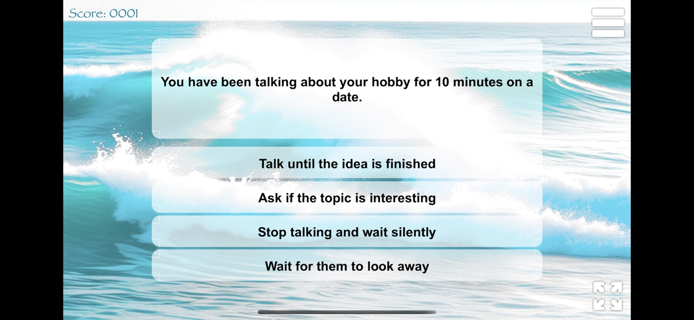
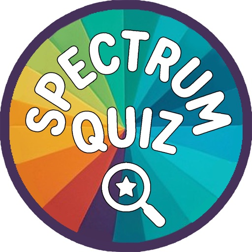

November 27, 2026 – January 3, 2027 · Grand Tree Burn: January 8, 2027
Experience authentic Danish holiday magic, twinkling lights, parades, and fireside cheer in Santa Ynez Valley.
Solvang Julefest 2026 at a glance
Dates
November 27, 2026 – January 3, 2027. Grand Tree Burn: Friday, January 8, 2027.
Hours
Pacific Time. Tree lighting Friday, Dec 4 at 5:30 PM; Julefest Parade Saturday, Dec 5 at 11:00 AM; nightly lights 5:00 PM–9:00 PM; Santa’s Village Sat–Sun 12:00 PM–4:00 PM.
Location
Downtown Solvang, CA 93463 — Solvang Park, Copenhagen Drive & Mission Drive. Tree Burn at Old Mission Santa Inés fields.
Top highlights
Tree lighting, Julefest Parade, Nisse gnome hunt, Maker’s Market, nightly light & music show, Santa’s Village, Hygge candlelight tours, Copenhagen Countdown
Admission
Core park events are free. Book hotels early — Julefest weekends sell out up to 6 months ahead.
Parking tips
Park in free lots on the Alisal Road edge and behind Mission Drive. Avoid Copenhagen Drive after 4:30 PM on lighting and parade days.
Where to Stay
Reserve on the interactive Solvang hotel map. Pair with GetYourGuide wine tasting or trolley rides.
What Makes Solvang Julefest Special?
A six-week Danish Christmas season in the middle of California wine country — lights in the windmills, gløgg in the park, and hygge after dark.
Travel + Leisure and Time have both put Solvang on shortlists of America’s most magical Christmas towns — not because it copies a mall winter village, but because the architecture was already Danish. Half-timbered shops, storks, and windmills sit under oak-hill skies. From the Friday after Thanksgiving through early January, those streets become Julefest: a season of lights, folk costume, and the Danish idea of hygge — warmth you can feel in a cup of gløgg and a crowded curb at the tree lighting.
Julefest 2026–2027 runs November 27, 2026 through January 3, 2027, with the village’s signature community closer — the Annual Solvang Christmas Tree Burn on Friday, January 8, 2027 — at the Old Mission Santa Inés fields. In between: a tree lighting in Solvang Park, the Julefest Parade, a town-wide Nisse gnome hunt, Wednesday twilight maker’s markets, nightly light-and-music shows, Santa’s Village on weekends, Hygge candlelight walks, and a New Year’s Eve “Copenhagen Countdown” at 3:00 PM local time — midnight in Denmark.
Eat the season: gløgg (mulled wine with raisins and almonds), æbleskiver with jam, Christmas butter cookies, and roasted nuts along Copenhagen Drive. Then walk Mission Drive after dark. The lights are the point. So is booking a hotel early — Julefest weekends disappear months ahead.
Hygge is not a décor style; it is a Danish way of making winter feel like company. In Solvang that means candlelight in bakery windows, wool layers on Copenhagen Drive, and a cup you hold with both hands while the park tree cycles through its hourly show. Traditional gløgg is red wine warmed with cinnamon, cloves, orange, and cardamom, finished with raisins and slivered almonds — the same winter drink you would find at a Danish julemarked. Æbleskiver are the festival pancake spheres cooked in a special dimpled pan, served with raspberry jam and powdered sugar. Wooden gingerbread-style fachwerk — the half-timbered storefronts that made Solvang famous — reads as a storybook village even in July. In December, with wreaths on the beams and lights in the windmill, it becomes the reason people drive two hours from Los Angeles on a Friday night.
Solvang was founded in 1911 by Danish educators who wanted a folk school in California. The windmill, the storks, and the timbered façades were built as heritage, not as a holiday set. That is why Time and Travel + Leisure keep ranking the village among America’s most magical Christmas towns: the architecture does not come down in January. Julefest simply turns the lights on, fills Solvang Park with a tree and a nightly soundtrack, and invites the valley to walk instead of drive. If you have only one night, make it the Friday tree lighting or a midweek light show. If you have a weekend, pair Saturday’s parade with Sunday Santa photos and a Monday winery loop when the village is still dressed for Christmas and the curb is quieter.
Julefest weekends sell out up to 6 months in advance — reserve your hotel early. Use the Solvang hotel map below before you lock parade-weekend dates.
How to Time Your Julefest Stay
Six weeks is a long season. Pick the weekend that matches your crowd tolerance, then book the hotel before the calendar fills.
Opening stretch (November 27 – December 3, 2026). The Nisse hunt starts, park lights come online, and midweek rooms are still findable if you booked in late summer. This is the best window for a quiet Hygge candlelight tour and a first pass at bakery tins before they sell the good butter cookies out.
Lighting & parade weekend (December 4–6, 2026). The busiest 48 hours of the season. Friday 5:30 PM tree lighting with Fossemalle ballerinas; Saturday 11:00 AM Julefest Parade; Saturday–Sunday Santa’s Village 12:00–4:00 PM. Park on the Alisal edge, walk in, and do not plan a 7:00 PM dinner without a reservation. If you only come once, come this weekend — and book the room in May or June.
Mid-December weekdays. Wednesday twilight Maker’s Markets in Solvang Park are the European night-market version of Julefest: crafts, pastries, hot drinks, shorter lines. Pair a Wednesday market with a Thursday wine tasting in Los Olivos or Santa Ynez, then return for the 5:00–9:00 PM light show.
Christmas week and Copenhagen Countdown (December 24 – January 1). Village restaurants book out. The park soundtrack shifts toward New Year’s after December 25. Thursday, December 31, 2026 is the Danish New Year at 3:00 PM — champagne in Solvang Park, then a valley dinner. Stay through January 3 if you want the last Nisse clues without parade crowds.
The closer (Friday, January 8, 2027). The Christmas Tree Burn at Old Mission Santa Inés fields is a different night: open air, fire department supervision, live entertainment, and the valley’s collective exhale. It is not downtown twinkle-lights. Bring a coat, a blanket, and a plan for parking in the mission area — then call the season done.
Complete Festival Schedule & Event Highlights
Every event is open below — no clicking required. Core festival dates are November 27, 2026 – January 3, 2027; the Tree Burn is January 8, 2027.
🎄 Tree Lighting & Ceremony
🎄 Solvang Park tree lighting
Friday, Dec 4 · 5:30 PM
🎄 Julefest Tree Lighting Ceremony
Solvang Park switch-on with live music, caroling, and Fossemalle Dance Studio ballerinas. Arrive by 5:00 PM for a gazebo sightline, then dinner on Copenhagen Drive and a walk past the windmill.
🎁 Annual Julefest Parade
🎁 Downtown parade route
Saturday, Dec 5 · 11:00 AM
🎁 Annual Julefest Parade
Marching bands, Danish folk dancers, vintage floats, and Santa through downtown Solvang. Claim a shaded curb by 10:15 AM. After the last float, Solvang Park fills for Santa photos.
🧙♂️ Nisse Adventure Gnome Hunt
🧙♂️ Hidden gnomes in the village
Daily · Nov 27 – Jan 3
🧙♂️ Nisse Adventure (Gnome Hunt)
Find mischievous Danish Jule-Nisse in shop windows, courtyards, and park nooks. Pick up clue sheets at the Solvang Visitor Center — finishers win official holiday prizes.
🍷 Gløgg & Maker's Market
🍷 Gløgg, stalls & æbleskiver
Wednesdays · twilight
🍷 Julefest Maker’s Market
European night market in Solvang Park: artisan crafts, pastries, hot drinks, and gifts. Wednesday evenings are calmer than Saturday — shorter gløgg lines. Confirm weekly hours at the Visitor Center.
✨ Nightly Light & Music Show
✨ Solvang Park after dark
5:00 PM – 9:00 PM
✨ Nightly Light & Music Show
Hourly light displays in Solvang Park daily. After Christmas Day the soundtrack shifts toward New Year’s themes. The park tree plus Copenhagen Drive storefronts is the classic photo loop.
🎅 Santa’s Village & Family Fun
🎅 Free photos with Santa
Sat & Sun · 12:00 PM – 4:00 PM
🎅 Santa’s Village
Free photos with Santa Claus in Solvang Park. Lines peak after Thanksgiving and on parade Saturday. Do Santa first, then æbleskiver, then the Nisse hunt.
🕯️ Hygge Candlelight Walking Tour
🕯️ Evening village walk
Evenings · through the season
🕯️ Hygge Candlelight Tours
Guided walks with costumed locals, Danish holiday folklore, music, and a treat stop. These sell out on parade weekend and New Year’s week — book a Friday or Sunday, and wear real shoes.
✨ Copenhagen Countdown
Thu, Dec 31 · 2:00 PM – 4:00 PM
✨ Danish New Year at 3:00 PM
Ring in midnight in Copenhagen at 3:00 PM local time in Solvang Park — live music and champagne. Family-friendly afternoon countdown; book dinner early or plan Buellton / Los Olivos.
🎄 Annual Solvang Christmas Tree Burn
Friday, Jan 8 · 5:00 PM
🎄 Grand Tree Burn
Old Mission Santa Inés fields — community bonfire, live entertainment, and safety demos supervised by the Santa Barbara County Fire Department. Dress for open-field wind; this is the last night of the season.
Seasonal Treats & Warm Drinks Guide
Hygge in a cup and a paper bag: gløgg, æbleskiver, Christmas cookies, and roasted nuts along Copenhagen Drive.
📍 Village stalls
Gløgg
Spiced Danish mulled wine with raisins and almonds — the official Julefest pour. Find it at park stalls and wine-friendly tasting rooms that lean into the season.
Mulled wineRaisins & almondsHygge
📍 Bakeries & tents
Æbleskiver
Puffed pancake spheres with jam and powdered sugar. The same festival breakfast as Danish Days — now eaten under park lights with cold hands and a paper cup of gløgg.
Jam & sugarWarmIconic
📍 Solvang bakeries
Kagerværk (butter cookies)
Danish Christmas butter cookies — the tins you carry home and the plates that empty at Olsen’s and Solvang Bakery. Buy on a weekday morning before parade Saturday.
Butter cookiesTake homeBakery
📍 Park market
Roasted nuts & sweets
Cinnamon nuts, chocolate tins, and market bags from the Wednesday twilight stalls. Eat them walking Copenhagen Drive while the hourly light show cycles in the park.
MarketWarm snackEvening
Where to Stay & Festival Logistics
Julefest weekends sell out up to 6 months in advance — reserve your hotel early, then add a wine tasting or trolley ride around the lights.
Parade weekend (December 4–6, 2026), Christmas week, and New Year’s Eve are the first to vanish. Book The Landsby, Hotel Corque, Wine Valley Inn, Hadsten, or a Buellton base now.
📍 Walkable Solvang
Check village hotel rates
Compare downtown Solvang and Buellton inventory on one hotel map. A walkable room beats circling Copenhagen Drive after the 5:30 PM tree lighting.
Park once, dress warmer than the afternoon sunshine suggests, and shoot the windmill after the park lights come on.
Parking & shuttles
Use free lots on the Alisal Road edge and behind Mission Drive, then walk. Do not hunt for a space on Copenhagen Drive after 4:30 PM on lighting or parade days. If your hotel or Buellton posts a holiday shuttle, take it on December 4–5 and New Year’s Eve.
Best photo spots
Solvang Park tree after 5:30 PM, the windmill with lights in the blades, and Copenhagen Drive storefronts looking toward midtown. For a quieter frame, walk Mission Drive just after the hourly park show resets — crowds drift, the timber stays lit.
Evening temperatures
Santa Ynez winter days can feel mild; nights do not. Expect 40s °F after dark, valley wind at the Mission fields for the Tree Burn, and brick that holds the cold. Pack a real coat, not just a festival sweater.
Coming for the holiday season? Plan a Julefest stay in December and use Wine & Experiences for midweek tastings when the lights are on and the curbs are quieter.
A practical two-day loop: check in Friday afternoon, walk Copenhagen Drive before the 5:00 PM park show, eat æbleskiver, then claim a tree-lighting or light-show spot. Saturday: parade curb by 10:15 AM, Santa’s Village after the last float, Nisse clues through the shops, then a trolley or wine-tour slot if you reserved it. Sunday: bakery boxes, one last windmill photo in daylight, and a checkout that leaves you on Highway 246 before the afternoon tasting-room rush. If you add the Tree Burn weekend in January, treat it as its own overnight — do not try to stack it onto a New Year’s hotel you already stretched.
Upcoming Solvang Events
After Danish Days, lock Julefest, Taste of Solvang, Spring Wine Fest, and the Wine Country Marathon before you book the rest of the trip.
Nov 27, 2026 – Jan 8, 2027📍 Solvang Park & Village
★ Free holiday season
Julefest Christmas 2026
Tree lighting, the Julefest Parade, nightly lights, candlelight tours, and the January 8 Tree Burn.
Solvang, Buellton & Santa Ynez Valley Tours & Highlights
Wine tastings, village walks, and vineyard outings in Solvang, Buellton, and the Santa Ynez Valley — book these before you add a Santa Barbara day trip.
From $159 / person📍 Santa Ynez Valley
★ 4.7 (19 reviews)
Santa Ynez 3-Winery Tour with Picnic Lunch
Taste three Santa Ynez Valley wineries with a picnic lunch — a classic wine-country day from Solvang and Buellton.
Solvang Travel FAQ: Hotels, Parking, Wine Country & Danish Village Tips
Everything you need to know before visiting the Danish Capital of America.
Solvang was founded in 1911 by a group of Danish-Americans who traveled west to establish a Danish colony and preserve their cultural heritage.
To preserve traditional Danish architecture, early residents constructed buildings featuring half-timbered facades, thatched-roof aesthetics, and traditional windmills starting in the mid-20th century.
Solvang is located in Santa Barbara County, California, in the heart of the Santa Ynez Valley, about 45 minutes northwest of Santa Barbara.
Spring and autumn offer mild weather and pleasant walking conditions. Winter is popular for holiday lights, while summer brings warm sunshine.
Solvang is approximately 125 miles northwest of Los Angeles, taking around 2 to 2.5 hours to drive depending on traffic.
Yes, downtown Solvang is extremely compact and walkable, making it easy to explore shops, parks, and sights on foot.
Yes, public street parking and municipal parking lots throughout downtown Solvang are free with no time meters.
Yes, several well-maintained public restrooms are located near main municipal parking areas and visitor centers in the downtown core.
Popular sights include four traditional windmills, the Hans Christian Andersen Museum, Mission Santa Inés, and historic Danish-style architecture.
Danish Days is Solvang's annual cultural festival held in September, featuring traditional music, folk dancing, parades, and historical displays.
Yes, Solvang is very dog-friendly. Many downtown outdoor plazas, sidewalk areas, and shop entrances welcome leashed pets.
Solvang experiences a Mediterranean climate with warm, dry summers and mild winters with occasional rain.
A day trip is usually enough to explore the main village streets, while an overnight stay allows time to explore the surrounding valley.
Yes, the village offers parks, storybook-themed museums, open plazas, and safe pedestrian streets suitable for families.
Most retail boutiques and local shops are open daily from around 10:00 AM to 5:00 PM or 6:00 PM.
Santa Barbara Airport (SBA) is the closest commercial airport, located roughly 35 miles away. Los Angeles International Airport (LAX) is about 120 miles away.
Once you arrive downtown, a car is not necessary. However, having a car is useful if you plan to visit neighboring towns in the Santa Ynez Valley.
Solvang features a half-size bronze replica of Copenhagen's iconic Little Mermaid statue, honoring author Hans Christian Andersen.
Yes, Sunny Fields Park and Solvang Park offer open green spaces, playgrounds, picnic benches, and shade trees right in or near the center.
Old Mission Santa Inés, founded in 1804, is located right on the eastern edge of downtown Solvang and offers tours and scenic views.
Comfortable walking shoes are essential. Layered clothing works best, as temperatures can be cool in the morning and evening but warm during the afternoon.
Yes, photography is welcome throughout all public walkways, plazas, and historic streetscapes.
The town showcases Provincial Danish architecture, featuring timber frames, high-pitched gables, copper weather vanes, and decorative towers.
Yes, there are several public electric vehicle charging stations located in municipal parking lots around the downtown area.
Located above The Book Loft, this small museum honors the famed Danish fairy tale author with displays of his life, letters, and works.
Yes, cycling is popular in Solvang and the surrounding Santa Ynez Valley roads. Multi-rider surrey cycles are also available for local rental.
Yes, Solvang is a safe, quiet community with well-lit downtown streets suitable for evening walks.
English is the primary language spoken, though many historic street names and signs feature traditional Danish words.
The Santa Ynez Valley Transit (SYVT) runs local bus routes connecting Solvang to neighboring towns like Buellton and Santa Ynez.
The Solvang Visitor Center on Copenhagen Drive provides maps, brochures, and assistance from local staff.
Solvang Travel Guides: Bakeries, Weekend Plans & Best Time to Visit
Local, keyword-rich guides for planning Danish bakeries, Santa Ynez Valley wine weekends, and festival season in Solvang, California.
Guide 01 · Food
Top Authentic Danish Bakeries & Pastries in Solvang
Solvang’s reputation as the Danish Capital of America is baked in — literally. The village’s most-searched food experiences are aebleskiver (spherical pancake puffs dusted with powdered sugar and served with raspberry jam) and kringle, a flaky almond-filled pastry that locals treat as a morning ritual. Start on Copenhagen Drive and Mission Drive, where the scent of butter, cardamom, and fresh pretzel-style bread pulls visitors off the sidewalk before the shops fully wake up.
Two names come up in almost every “best bakery in Solvang” search. Olsen’s Bakery (Olsen’s Danish Village Bakery) is a classic stop for aebleskiver, kringles, and old-world cases of cookies and breads. Solvang Bakery is equally iconic for Danish butter cookies, seasonal cakes, and photo-ready village windows. Pair either with a coffee and you have the most authentic first hour in town — no reservation required, just an early arrival on busy weekends and Danish Days.
If you are building a food-first itinerary, treat bakeries as a loop, not a single stop. Sample aebleskiver at one shop, kringle at another, then walk the half-timbered streets between windmills and courtyards. It is the easiest way to taste Solvang’s Danish heritage without a car, and it sits a short stroll from the walkable downtown hotels.
Guide 02 · Itinerary
Ultimate Weekend Itinerary in Santa Ynez Valley
A two-day Solvang weekend is the sweet spot: one day for the Danish village on foot, one day for Santa Ynez Valley wine tasting and a slower dinner. Check into a downtown inn on Friday night if you can, so Saturday morning starts with pastries instead of highway traffic from Los Angeles or Santa Barbara.
Day 1 — Village walking. Begin with aebleskiver or kringle, then walk Copenhagen Drive and Mission Drive for windmills, courtyards, and Mission Santa Inés. Shop half-timbered boutiques, ride a trolley if you want a guided loop, and keep lunch in town so you stay walkable. Late afternoon is for more bakeries or a quiet hotel courtyard. Dinner downtown — Danish-American comfort food or a wine-country bistro — then an evening stroll under the lights.
Day 2 — Wine tasting and local dining. Use Saturday or Sunday for a Santa Ynez or Buellton tasting route: two or three wineries, a picnic lunch, and a golden-hour drive back to Solvang. Book a guided wine tasting tour if you would rather not designate a driver. Close the weekend with one last pastry box for the road. This 2-day plan covers the three searches people actually make — things to do in Solvang, wine tasting near Solvang, and where to stay downtown — without rushing the village.
Guide 03 · Seasons
Best Time to Visit Solvang: Events & Danish Heritage Days
Solvang has a Mediterranean climate: warm, dry summers and mild winters with occasional rain. Spring (March–May) and autumn (September–November) are the most comfortable for walking the Danish village — highs are typically pleasant, tasting rooms are lively, and hotel rates are easier than peak summer weekends. Summer is sunny and popular for wine-country day trips; winter is quieter except when the Christmas lights go on.
The signature cultural date is Danish Days, Solvang’s September heritage festival (often called Danish Heritage Days). Expect folk dancing, parades, traditional music, aebleskiver stands, and the most crowded — and most photogenic — streets of the year. Book Solvang hotels early if that weekend is your target; downtown inns fill first.
From late November through December, Solvang turns into a Christmas village: festive lights on Copenhagen Drive, holiday windows, and Julefest-style evenings that pair perfectly with kringle and hot chocolate. If you want milder weather and fewer crowds, aim for April–early June or late September–October after the festival. If you want peak Danish heritage atmosphere, come for September’s Danish Days or the December lights. Either way, downtown stays walkable year-round.
Solvang FAQ: Hotels, Wine Tours & How to Plan Your Visit
Straight answers to the questions travelers and AI search engines ask most about Solvang, California.
Solvang is famous as the Danish Capital of America — a walkable Santa Ynez Valley village known for half-timbered architecture, windmills, authentic Danish bakeries (aebleskiver, kringle, and butter cookies), boutique hotels, and nearby wine tasting.
One full day covers downtown walking, bakeries, and a few shops. A weekend (2 days) is ideal so you can add Santa Ynez Valley wine tasting, a trolley ride, and an overnight boutique stay.
Top downtown picks include The Landsby, Hotel Corque, The Hadsten Solvang, Wine Valley Inn & Cottages, and King Frederik Inn — all walkable to Mission Drive bakeries and shops. Compare live rates in the Solvang hotels section on this page.
Yes. Solvang sits in the Santa Ynez Valley wine country. You can book winery tours, picnic tastings, and day trips from Solvang, Buellton, and Santa Ynez through the wine tasting tours section on this guide.
Yes. Downtown Solvang is compact and pedestrian-friendly. Most bakeries, shops, inns, and Mission Santa Inés are within a short walk; free street parking is available if you drive in.
Solvang is in Santa Barbara County, about 45 minutes (roughly 35 miles) northwest of Santa Barbara and about 2 to 2.5 hours (around 125 miles) northwest of Los Angeles via US-101.
Santa Barbara Area Tours & Day Trips
Coastal add-ons after you have planned Solvang — harbor kayaks, trolleys, horseback rides, and Funk Zone food walks.
From $55 / person📍 Santa Barbara, CA
★ 4.7 (60 reviews)
Santa Barbara Harbor: Wildlife Kayak Tour
Paddle the harbor on a 2-hour wildlife kayak outing with city, beach, and sea-lion views for every skill level.
More Santa Barbara kayaking, e-bikes & foodie walks

Spectrum Quiz
Social Skills Simulator

Free on the App Store
Master Social Interactions with Spectrum Quiz
Neurodiversity & Social Logic Simulator for Adults (ADHD & Autism Spectrum Support)
Practice real-world conversations, workplace dynamics, dating, boundaries, and sensory overload in a calm, choice-based simulator made for neurodivergent adults.